To zamówienie zastępuje kierunek z zamówienia 08 („malarski świat”). Z 08 zostaje tylko część G (śnieg, kałuże, parasole, wodny blob, wodnik, smoki), ale rysowana w stylu opisanym tutaj. Materiały do tego zamówienia są w folderze
6_zamowienie_09/(wzory, zrzuty z makiety, szablony, paleta, wzory dachów). Data: 4 października 2026.
6_zamowienie_09/01_wzor_stylu/kon_WZOR_SWIATA_x3.png): budynki, drzewa, dekoracje, ziemia, pojazdy. Postacie prostsze, w manierze „blondynki” (łuczniczka z paczki v1, 01_wzor_stylu/wzor_postaci_blondynka_tak_nie.png): grubszy piksel, duże plamy, mało detali (punkt 4).Makietę na żywo właściciel może Ci udostępnić jako link. Tam widać ruch wiatru, prześwit pod koronami, ścinanie drzew i budynki. Nieruchome zrzuty z niej są w 6_zamowienie_09/02_makieta_zrzuty/, a animacja wiatru w wiatr_animacja_x3.gif. Makieta jest narysowana programem i jest tylko szkicem: chodzi o układ, skalę i ruch, nie o jakość rysunku. Twoja grafika ma być dużo ładniejsza i bardziej szczegółowa.
Wzory: blondynka dla postaci, koń dla świata
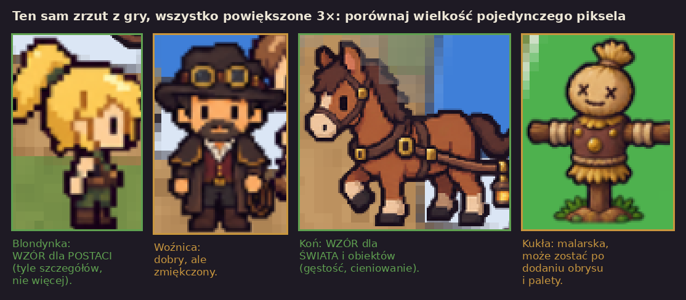
Postacie: tak / nie tak
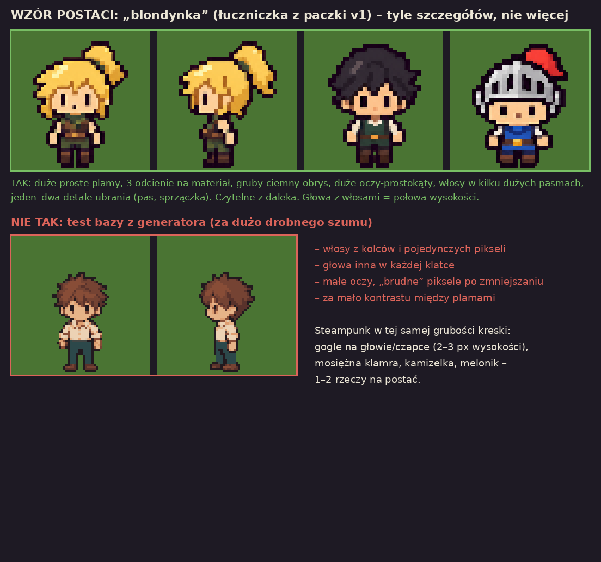
Makieta: wiatr w koronach i trawie (ruch robi program)
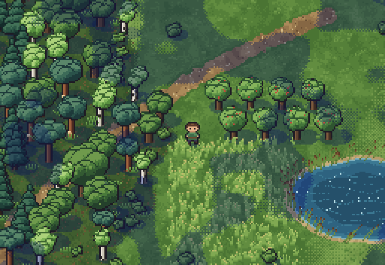
Makieta: postać pod koronami, prześwit
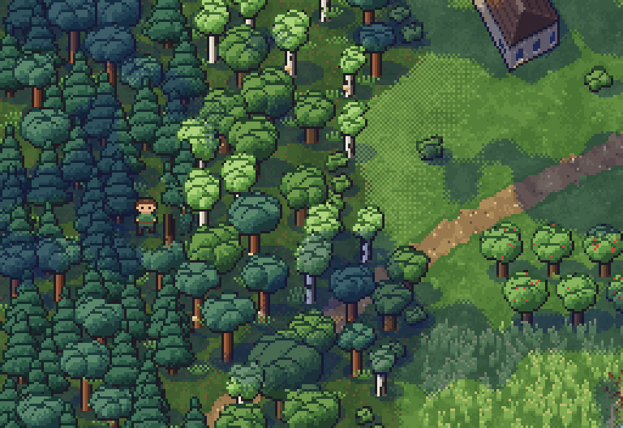
Makieta: pasek ścinania i strącanie owoców
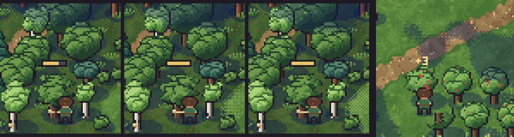
Postacie: arkusz kierunki × klatki (3 albo 5 kierunków)
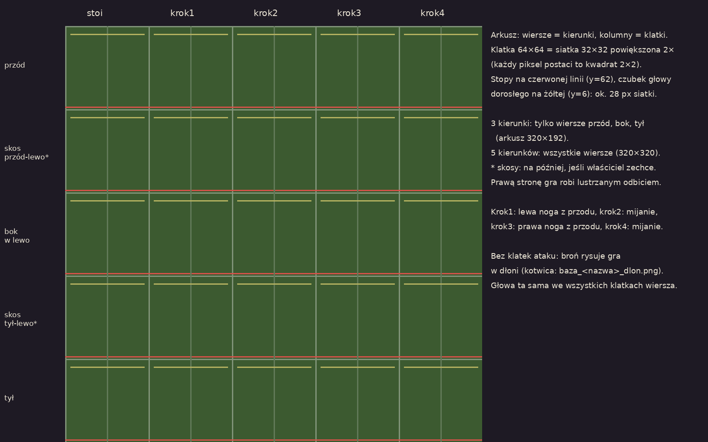
Dachy liczone przez program pod różnymi kątami
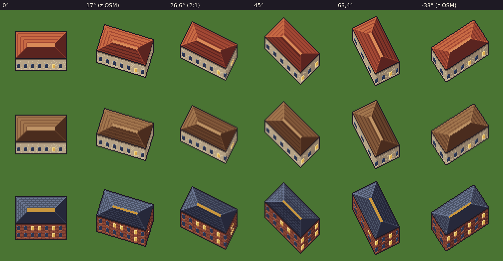
Skala: scena 480×320
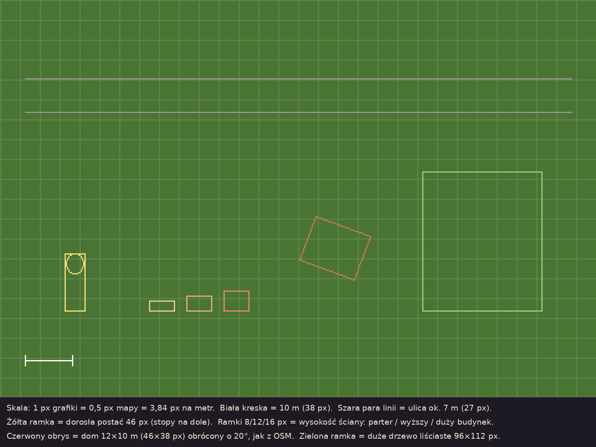
Rurociąg z modułów 8×8 (schemat)
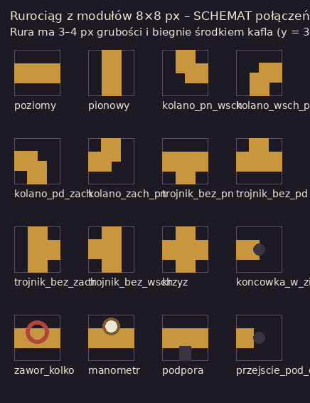
Tor rysuje program, wagony w 16 kierunkach
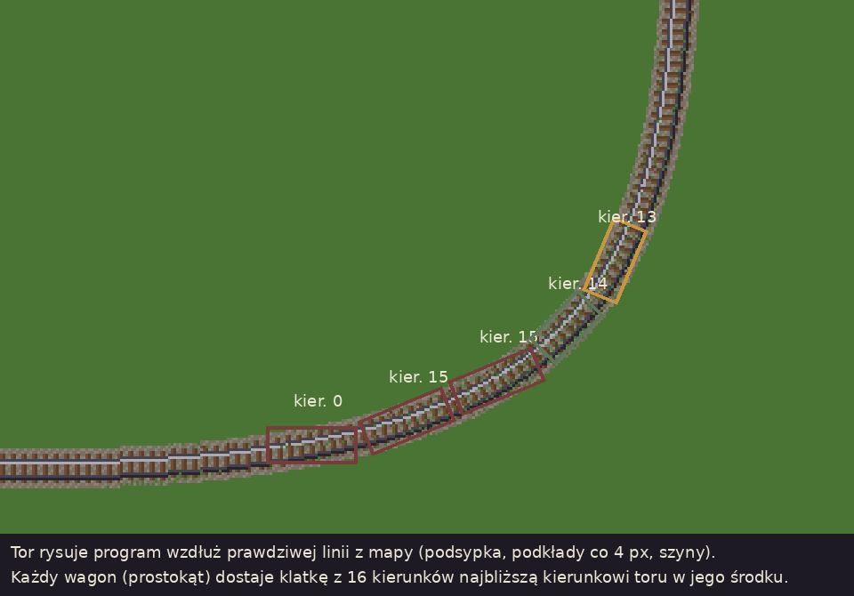
Kolejność 16 kierunków (pojazdy, broń w dłoni)
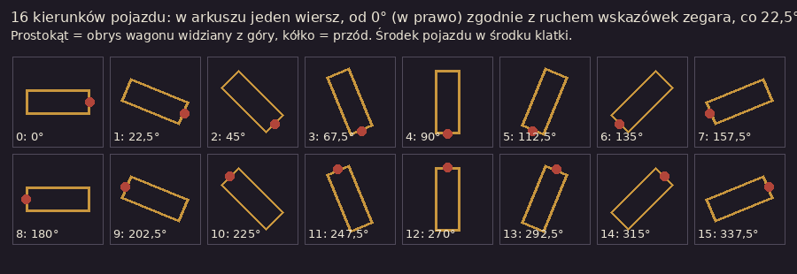
Paleta startowa
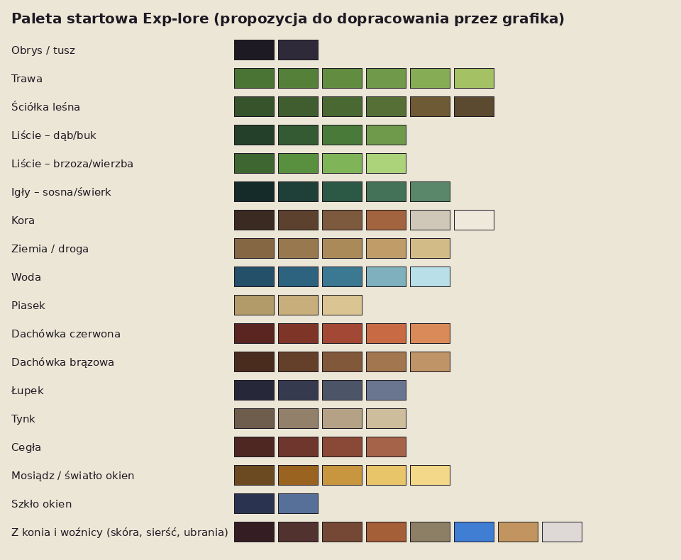
Zobacz 6_zamowienie_09/01_wzor_stylu/porownanie_gestosci_pikseli.png. To ten sam zrzut z gry, wszystko powiększone 3×:
| Co | Ocena | Dlaczego |
|---|---|---|
| Koń z wozu | ✅ wzorzec | drobny piksel, dużo odcieni, cieniowanie bryły, obrys w kolorze zamiast czerni |
| Woźnica | prawie dobrze | szczegółowy, ale gra go zmniejsza i rozmywa. W nowej skali tego nie będzie |
| Blondynka (łuczniczka z paczki v1) | ✅ wzór dla postaci | właściciel: „max coś w stylu blondynki”. Tyle szczegółów i nie więcej: duże plamy, gruby obrys, duże oczy. Szczegóły w punkcie 4 |
| Kukła treningowa | może zostać | jest malarska, nie pikselowa, ale pasuje wielkością. Przy przemalowaniu: obrys i paleta jak niżej |
#1e1a24 tylko tam, gdzie potrzebny jest mocny kontrast. Po oświetlonej stronie (lewa-góra) obrys może być jaśniejszy albo go nie być (tzw. selektywny obrys).<nazwa>_cien.png (czarna plama, ta sama wielkość płótna).6_zamowienie_09/04_paleta/paleta_startowa.png (też .gpl do GIMP/Aseprite i .hex). Możesz ją poprawić i rozszerzyć, ale oddaj ostateczną wersję z pierwszą sceną. Około 4–6 odcieni na materiał. Ziemia ciemniejsza i mniej nasycona niż postacie, żeby postacie się czytały.Opis świata: STYL_SWIATA_steampunk.md. Najważniejsze: dzisiejsze miasto, ale technika zatrzymała się na parze, mosiądzu i gazowych latarniach, a obok żyje magia. Ciepło i przytulnie, bez brudu, rdzy i smogu.
Właściciel chce, żeby steampunk był wyraźnie widoczny wszędzie, nie tylko na jednym przedmiocie:
Zębatki z umiarem: jedna mała na obiekt wystarczy. Mosiądz i para tak, zębatki wszędzie nie.
Jedna stała skala dla wszystkiego:
1 metr w grze = 3,84 piksela w pliku (1 piksel pliku = 0,5 piksela mapy). Gra pokazuje pliki bez zmniejszania. Dotąd pliki były rysowane 3× większe i gra je zmniejszała, przez co się rozmywały. Ta zasada już nie obowiązuje.
Przykłady w szablonie 6_zamowienie_09/03_szablony/szablon_sceny_480x320_objasnienie_x3.png.
| Co | Rozmiar w pliku | Uwagi |
|---|---|---|
| Dorosła postać | klatka 64×64 = siatka 32×32 powiększona 2×, postać ok. 28 px siatki (56 px pliku) | stopy na y = 62; maniera „blondynki” (punkt 4) |
| Dziecko | ok. 22–23 px siatki | |
| Osoba starsza | ok. 26 px siatki | lekko pochylona |
| Chochlik | ok. 18–20 px siatki | |
| Duże drzewo liściaste (dąb, buk, lipa) | płótno ok. 96×112, korona ok. 80 px szerokości | ok. 2,4 wysokości postaci |
| Średnie drzewo (brzoza, olcha, jabłoń) | 64×96 do 80×100 | |
| Sosna | ok. 72×120 | wysoki, rudy pień, korona u góry |
| Świerk, jodła | ok. 56×112 | stożek, piętra gałęzi |
| Kosodrzewina, jałowiec | 64×40, 28×48 | |
| Krzak | 32×28 do 40×32 | |
| Kępka trawy, kwiaty, kamyk | 4–12 px | |
| Trzcina z pałką | ok. 10×24 | |
| Ściana budynku (wysokość) | 8 / 12 / 16 px | parter / budynek wyższy / duży budynek (3 wysokości jak dotąd) |
| Okno na ścianie | ok. 3–5 × 4–5 px | patrz punkt 6.3 |
| Drzwi | ok. 4–6 × 7 px | |
| Typowy dom 12 × 10 m | ok. 46 × 38 px (rysuje program) | |
| Ulica 7 m | ok. 27 px | |
| Latarnia gazowa | ok. 16×48 | dziś 24×72 w skali „3×” |
| Szyld nad drzwiami | ok. 28×24 | dziś 42×36 |
| Wóz konny (klatka) | ok. 124×100 | koń wyraźnie wyższy od człowieka |
| Kafel podłoża | 256×256 | bez szwów, patrz punkt 7 |
| Ikony przedmiotów | 16×16 bez zmian | to już jest pixel art, pasuje |
Postacie mają celowo grubszy piksel niż świat (1 piksel siatki postaci = 2×2 piksele pliku; na ekranie ok. 1,5 piksela świata), jak dzisiejsza blondynka obok konia. Dzięki temu są proste do rysowania i animowania i dobrze czytelne na telefonie. Wielkość na mapie zostaje jak dziś.
03_szablony/szablon_sceny_480x320_x1.png, siatka co 16 px). Na scenie:To jest „jak ma wyglądać gra”. Właściciel ją akceptuje albo prosi o zmiany. 2. Po akceptacji: pliki produkcyjne wycinasz ze sceny i dorysowujesz brakujące warianty w tej samej manierze. Program nic nie przerysowuje. 3. Oddajesz partiami (kolejność w punkcie 12). Każdą partię wstawiamy do gry testowej i odsyłamy uwagi.
Właściciel po pierwszym podglądzie: „ludzik jest piękny, ale zbyt skomplikowany, trzeba by mu robić mnóstwo animacji. Musi być prostszy: animacja ruchu w 3 (ewentualnie 5) kierunkach, reszta to lustrzane odbicie, a samo używanie miecza to dodatkowa animacja identyczna dla każdego, zależna tylko od broni.”
public/postacie/ranger.png, obok wędrowiec i rycerz). Zobacz 01_wzor_stylu/wzor_postaci_blondynka_tak_nie.png: na górze TAK, na dole NIE TAK (test bazy z generatora).Rysujesz bazy ruchu (golą sylwetkę w neutralnym kolorze ze wszystkimi klatkami):
- baza_dorosly, baza_dziecko, baza_starszy (lekko pochylony, wolniejszy krok),
- wrogowie i stwory mają własne bazy, jeśli kształt jest inny (baza_chochlik). Szkielet, zombie, bandyta i herszt mogą użyć baza_dorosly.
Każda postać to ta sama baza z namalowaną głową, włosami i ubraniem: te same pozy, ta sama pozycja stóp, rąk i głowy. Dzięki temu nowa postać to głównie przemalowanie ubrania na gotowych klatkach, a nie nowa animacja. Maska ubrań (_maska.png) jak dotąd.
Wariant podstawowy, 3 kierunki: przód, bok (patrzy w lewo), tył. Prawo = lustrzane odbicie lewego, robi je gra. Wariant lepszy, 5 kierunków: przód, skos przód-lewo, bok w lewo, skos tył-lewo, tył. Pozostałe 3 (skosy w prawo, bok w prawo) gra odbija lustrzanie. Ruch joystickiem w dowolną stronę wygląda wtedy płynniej. Zacznij od 3. Skosy dorobimy, jeśli właściciel zechce.
Klatki w każdym kierunku: stoi + 4 klatki kroku (lewa noga z przodu, mijanie, prawa noga z przodu, mijanie). Dziś są tylko 2 kroki i postacie „lewitują”.
Układ arkusza: wiersze = kierunki (kolejność jak wyżej), kolumny = stoi, krok1, krok2, krok3, krok4. Klatka 64×64, stopy na y = 62, środek na x = 32. Arkusz 320×192 (3 kierunki) albo 320×320 (5 kierunków). Szablon: 03_szablony/szablon_postaci_5x5_objasnienie_x3.png (żółta linia = czubek głowy dorosłego).
Kotwica dłoni: do każdej bazy osobny mały plik baza_<nazwa>_dlon.png (ten sam rozmiar co arkusz, przezroczysty, z jednym czerwonym pikselem w miejscu, gdzie dłoń trzyma broń, w każdej klatce). Ponieważ wszystkie postacie z jednej bazy mają te same pozy, kotwica jest jedna na bazę.
Postać nie dostaje klatek ataku. Gra przy ciosie pokazuje klatkę stoi w kierunku ciosu, przesuwa postać o 1–2 px do przodu („wypad”) i rysuje broń w dłoni (kotwica z 4.3) obracającą się po łuku, plus smugę. Dlatego atak wygląda tak samo u każdej postaci i zależy tylko od broni. Od Ciebie:
| Plik | Rozmiar klatki | Klatki | Co to |
|---|---|---|---|
bron_<id>_reka |
24×24 (siatka 12×12 powiększona 2×, jak postacie) | 16 kątów (co 22,5°, od „w prawo” zgodnie z zegarem) | broń trzymana w dłoni, rękojeść w środku płótna (wokół niej gra obraca). Dla każdej broni z 4_przedmioty_obecne/ (kijek, miecze, łuki, różdżka…) i dla siekiery (ścinanie) |
smuga_ciecie |
32×32 | 4 (narasta, znika) × 16 kątów albo 1 kąt (gra obróci) | biała smuga cięcia mieczem |
smuga_obuch |
32×32 | jak wyżej | cięższa, krótsza (kij, siekiera, topór) |
smuga_magia |
32×32 | jak wyżej | iskry (różdżka, laska) |
strzala |
16×16 | 16 kątów | strzała w locie |
luk_napiety |
24×24 (siatka 12×12 ×2) | 16 kątów | łuk z naciągniętą cięciwą (gdy gracz celuje) |
Mocny cios (przytrzymanie) gra robi tą samą bronią, tylko wolniej i ze złotą smugą. Gdy właściciel zechce, można później dodać jedną wspólną klatkę „zamach” na kierunek do bazy (ręka uniesiona). Nadal raz na bazę, nie na postać.
baza_dorosly w 3 kierunkach (stoi + 4 kroki) + kotwica dłoni, na zielonym tle w podglądzie i jako pliki 1:1._reka, 16 kątów) + smuga_ciecie.Program kołysze koroną na wietrze (u góry mocniej, u dołu słabiej) i przesuwa ją zawsze o całe piksele, nie obraca. Pień stoi. Gdy postać wchodzi pod drzewo, korona wokół niej robi się „dziurawa” (prześwit z szachownicy pikseli), żeby było widać postać. Zobacz 02_makieta_zrzuty/las_przeswit_x3.png i wiatr_animacja_x3.gif.
Dlatego każde drzewo to dwa pliki o tym samym płótnie:
- drzewo_<gatunek>_<wariant>_korona.png: tylko korona (liście, gałęzie w koronie),
- drzewo_<gatunek>_<wariant>_pien.png: pień z korzeniami.
Nałożone na siebie dają całe drzewo. Korona zachodzi na górę pnia o 4–6 px. Pień dotyka ziemi w środku dolnej krawędzi płótna. Szablon: 03_szablony/szablon_drzewa_96x112_objasnienie_x5.png. Bez wbudowanych klatek wiatru: jedna klatka na plik, ruch robi program.
Każdy gatunek w 3 wariantach (różny kształt i wielkość korony), nazwy _a, _b, _c:
| Gatunek | Plik | Gdzie rośnie | Charakter |
|---|---|---|---|
| dąb | drzewo_dab |
lasy liściaste, parki | szeroka, „kalafiorowa” korona, ciemna zieleń |
| buk | drzewo_buk |
lasy liściaste | gładka szara kora, gęsta korona |
| lipa | drzewo_lipa |
parki, aleje | owalna, jasnozielona |
| brzoza | drzewo_brzoza |
lasy mieszane, brzegi | biała kora z czarnymi plamkami, lekka jasna korona |
| olcha | drzewo_olcha |
brzegi wody | ciemna, zwarta |
| wierzba | drzewo_wierzba |
brzegi wody | zwisające gałęzie |
| jabłoń | drzewo_jablon |
sady, ogródki | niska, rozłożysta. Owoce jako osobna warstwa, patrz 5.4 |
| grusza | drzewo_grusza |
sady, ogródki | wyższa, owoce jak wyżej |
| śliwa | drzewo_sliwa |
sady | owoce jak wyżej |
| sosna | drzewo_sosna |
lasy iglaste, piaski | rudy, wysoki pień, płaskie kępy igieł u góry |
| świerk | drzewo_swierk |
lasy iglaste, góry | ciemny stożek, piętra gałęzi |
| jodła | drzewo_jodla |
góry | jak świerk, jaśniejsza, równiejsza |
| kosodrzewina | drzewo_kosodrzewina |
wysoko w górach | niska, rozłożysta |
| jałowiec | drzewo_jalowiec |
wrzosowiska | wąska kolumna |
Gracz może ściąć tylko część drzew i musi to widzieć z daleka. Dla każdego gatunku, który da się ściąć (wszystkie leśne poza pomnikami przyrody i drzewami w sadach i parkach):
- drzewo_<gatunek>_<wariant>_pien_zacios.png: ten sam pień z wyraźnym jasnym zaciosem (świeże drewno, 3–4 px, widoczne z daleka). To znak „to drzewo można ściąć”,
- drzewo_<gatunek>_pieniek.png: pieniek z jasnymi słojami na górze (ok. 16×12),
- drzewo_<gatunek>_sadzonka.png: młode drzewko, które odrasta (ok. 24×28).
Dodatkowo:
- tabliczka_pomnik_przyrody.png: mała zielona tabliczka na słupku przy chronionym drzewie (ok. 10×14, bez napisu, może być godło-liść).
Właściciel: „muszę wiedzieć, że ścinanie się zaczęło albo że strącam owoce, teraz nie wiem, czasem zniknie, czasem nie”. Program pokaże pasek postępu nad drzewem, potrząśnie koroną i doda dźwięk (02_makieta_zrzuty/informacja_zwrotna_ciecie_i_owoce_x5.png). Od Ciebie potrzebujemy małych efektów w tym samym stylu:
| Plik | Rozmiar | Klatki | Co to |
|---|---|---|---|
efekt_wiory |
16×16 | 4 | wióry i drzazgi odpryskujące od pnia przy uderzeniu |
efekt_uderzenie |
16×16 | 3 | krótki błysk / „gwiazdka” w miejscu ciosu |
efekt_liscie |
24×24 | 4 | obłok spadających liści (3 kolory: zielony, jesienny, igły) |
efekt_upadek_drzewa |
48×48 | 4 | drzewo pada na bok i rozpada się w obłok liści (ogólne, do koloru dobiera program) |
pasek_postepu |
18×5 | 2 | ramka paska (pusta / pełna), mosiężna, jak manometr |
ikona_siekiera, ikona_reka |
8×8 | 1 | mała ikonka nad drzewem: „ścinasz” / „potrząsasz” |
owoc_<jablko/gruszka/sliwka> |
6×6 | 1 | owoc, który spada z drzewa i turla się po ziemi |
drzewo_<owocowe>_<wariant>_owoce.png |
jak korona | 1 | same owoce jako osobna warstwa na koronie (program zdejmuje je po kolei, gdy gracz potrząsa drzewem; drzewo bez owoców = korona bez tej warstwy) |
Rysowane od podstawy: ostatni wiersz pikseli to miejsce, gdzie roślina wyrasta z ziemi (program kołysze górę). Trawę i trzciny program rozchyla, gdy postać przez nie idzie.
krzak_<lisciasty/kwitnacy/jagodowy/igliasty> × 2 warianty, ok. 32×28 – 40×32, w dwóch częściach jak drzewa (_dol, _gora),trawa_niska (6 wariantów, 6–10 px), trawa_wysoka (6 wariantów, 8–14 px wysokości, z kłoskami),trzcina (4 warianty, z brązową pałką), paproc (3), wrzos (3), kwiaty_<czerwone/zolte/niebieskie/biale> (po 3), kamyk (6, 2–6 px), glaz (3, 12–20 px), mech (3 płaty), grzyb_<prawdziwek/kurka/muchomor> (po 2), szyszki_igly (plamki do ściółki).Budynki są generowane z prawdziwej mapy: każdy ma inny kształt, wielkość i obrót. Dotychczasowe tekstury dachówki obracane razem z budynkiem dawały postrzępione schodki i różne wielkości dachówek (02_makieta_zrzuty/budynki_jak_dzis_x3.png). Dlatego teraz dach i ścianę liczy program, piksel po pikselu, w docelowej skali: połacie, kalenicę, rzędy dachówek równoległe do okapu, cienie połaci według światła z lewej-góry, obrys i cień rzucany. Zobacz:
- 05_dachy_jak_liczy_program/dachy_katy_x4.png: ten sam dom pod 6 kątami, 3 materiały,
- 05_dachy_jak_liczy_program/dachy_ksztalty_L_U_szereg_x4.png: budynki w kształcie L, U i szeregowiec,
- 02_makieta_zrzuty/budynki_proponowane_x3.png.
To robi program sam. Od Ciebie potrzebujemy trzech rzeczy:
Dla każdego materiału pasek 5–6 odcieni od najciemniejszego do najjaśniejszego, plus kolor kalenicy lub krawędzi. Plik material_<nazwa>.png, np. 6 kwadratów po 8×8 obok siebie:
- dachy: dachowka_czerwona, dachowka_brazowa, lupek, gont, blacha_zielona, miedz_patyna, papa, szklo_oranzerii,
- ściany: tynk_kremowy, tynk_zolty, tynk_szary, tynk_bialy, cegla, drewno, kamien.
Na scenie-podglądzie (punkt 3) narysuj dachy tak, jak powinny wyglądać idealnie, w tym jeden obrócony o ok. 20° i jeden w kształcie L. Programista dopasuje swój algorytm do Twojego rysunku: rozkład odcieni na połaciach, rzędy dachówek, kalenice, okapy. Dodatkowo na osobnym arkuszu dachy_wzorcowe.png jeden prostokątny dach pod kątami 0°, 26,6° i 45° w każdym materiale z 6.2.
Nie obracają się razem z budynkiem, więc rysujesz je normalnie, w widoku gry. Każdy stempel ma środek podstawy w środku dolnej krawędzi płótna.
Ściany (dla wysokości 8 / 12 / 16 px):
- okno_<zwykle/okragle/witrazowe/sklepowe>: zgaszone i zapalone (_noc, ciepłe światło), 3–5 × 4–5 px; witryna sklepu 10–12 × 6 px,
- drzwi_<drewniane/mosiezne/sklepowe/kosciol>: 4–6 × 7 px; brama 10×8,
- rura_sciana_8, _12, _16: pionowa mosiężna rura od okapu do ziemi, z kolankiem u góry i u dołu (3–4 px szerokości),
- rura_sciana_pozioma: kawałek 8 px długości, powtarzany poziomo pod oknami,
- manometr_sciana, zawor_sciana, lampa_mosiezna_sciana (dzień/noc), skrzynka_pary, kratka_wentylacyjna.
Dachy:
- komin_ceglany, komin_mosiezny (z parą 3–4 klatki jak dotąd komin_para),
- zbiornik_dachowy (beczka na nogach, ok. 12×14), kociol_dachowy (z manometrem, ok. 14×14),
- wentylator_dachowy (3 klatki obrotu), wiatrowskaz (2 klatki),
- lukarna (okno w dachu, 10×10, 3 materiały), swietlik, iglica_wiezy (do kościołów i ratuszy).
Budynki ważnych miejsc (sklep, szkoła, kościół, urząd, szpital, policja, biblioteka, hotel, bank, alchemik, sklep sportowy, kemping): jeden charakterystyczny dodatek na dach lub ścianę (np. szkoła: mosiężny dzwonek na dachu; szpital: biała flaga z krzyżem; alchemik: kolorowy dym z komina; bank: mosiężna kopułka). Plik dodatek_<miejsce>.png.
256×256 px, w nowej skali, powtarzalne bez szwów (lewa krawędź pasuje do prawej, górna do dolnej). Po 3 warianty (_a, _b, _c) w tej samej jasności, żeby program mógł je mieszać. Bez kierunkowego światła i bez cieni rzucanych. Spokojniejsze niż obiekty: mało kontrastu, mało drobnych detali (detale dają stemple z punktu 5.5).
Lista (nazwy jak dotąd: podloze_<rodzaj>_a.png itd.): trawa, laka, park, las_lisciasty (ściółka z liści), las_iglasty (igły, szyszki, mech), bruk, chodnik, plac, droga (ubita ziemia z koleinami), piasek, pole_orka, pole_zboze, zarosla, parking, tory (podsypka), cmentarz, mokradlo, skala, woda (spokojna, ciemniejsza w środku. Falowanie robi program).
Granice (trawa–droga, trawa–woda, las–łąka) program robi sam: postrzępiona krawędź z szachownicy pikseli i rozsypane stemple z 5.5 (kępki, kamyki, trzciny). Nie trzeba już pasków krawędzi z zamówienia 08.
Jedyny wyjątek: kraweznik (pasek 32×4 px, powtarzany wzdłuż jezdni, w 4 odcieniach kamienia).
Program losowo prowadzi rurociągi przy drogach, przez trawniki i między budynkami, po siatce 8 px. Od Ciebie: moduły 8×8 px, które łączą się ze sobą. Rura ma 3–4 px grubości i biegnie środkiem kafla. Schemat połączeń (nie styl!): 03_szablony/schemat_rurociagu_moduly_8x8.png.
Moduły (mosiądz, z nitami i kołnierzami na łączeniach):
- rura_pozioma, rura_pionowa,
- rura_kolano_<pn_wsch / wsch_pd / pd_zach / zach_pn>,
- rura_trojnik_<bez_pn / bez_pd / bez_zach / bez_wsch>, rura_krzyz,
- rura_koncowka_<pn/pd/wsch/zach> (wchodzi w ziemię albo w ścianę),
- rura_zawor_<pozioma/pionowa> (czerwone kółko), rura_manometr_<pozioma/pionowa>,
- rura_podpora_<pozioma/pionowa> (rura na żelaznych nóżkach nad ziemią),
- rura_przeciek (2 klatki: mały syczący obłoczek pary z łączenia).
Para:
- para_mala, para_srednia, para_duza: obłoczki 4–6 klatek (narasta, rozwiewa się), biało-kremowe (#f1ede4), 2–3 stopnie przezroczystości bez gładkich przejść. Program używa ich przy kratkach, kominach, przeciekach i kotłach,
- studzienka_para: kratka w bruku (16×16), już jest w grze, do przerysowania w nowej skali.
Wszystko, co już jest w grze (3_obecne_grafiki/), w nowej gęstości i z mocniejszym steampunkiem: latarnia_gazowa (dzień/noc), lawka, kosz_mosiezny, hydrant_parowy, slup_ogloszeniowy, zegar_uliczny, donica_kwiaty, skrzynie_beczki, welocyped, automat_pneumatyczny, drogowskaz, plot_drewniany, plot_kuty, kukla_treningowa, kukla_treningowa_druga, tarcza_strzelnicza, krysztal_magii, fontanna_smok, kociol_publiczny, wieza_zegarowa, 12 szyldów miejsc (szyld_<miejsce>), wozy konne (3 ładunki × 3 maści, 2 klatki).
Nowe: skrzynka_rozdzielcza_pary (12×16, z manometrem i lampką), zbiornik_ulica (duży mosiężny zbiornik na nóżkach, 20×24), przystanek_tramwaju, lampa_wiszaca (nad wejściami), nagrobek (3), krzyz_przydrozny, murek.
Właściciel: na torach i peronach mają stać parowe lokomotywy i pociągi, nie konie. Konie z wozem zostają tylko na dworcach autobusowych.
Kto co rysuje: tory biegną po prawdziwej mapie, z łukami pod dowolnym kątem. Takich łuków nie da się narysować z góry, więc tory i perony rysuje program (szyny, podkłady, podsypka, krawędź peronu, jak dachy w punkcie 6), z Twoich palet i małych stempli. Lokomotywy, wagony i wyposażenie stacji rysujesz Ty. Program stawia pociąg na torze i obraca go zgodnie z krzywizną: każdy wagon osobno, jak koraliki na sznurku.
Ponieważ pixel artu nie da się ładnie obracać programem, każdy pojazd rysujesz w 16 kierunkach (co 22,5°, widok z góry, lekko z przodu, jak reszta mapy). Program dla każdego wagonu wybiera kierunek najbliższy kierunkowi toru w tym miejscu.
| Plik | Rozmiar jednej klatki | Klatki | Co to |
|---|---|---|---|
lokomotywa_parowa |
ok. 72×72 (lokomotywa ok. 64 px długości) | 16 kierunków | mała, sympatyczna lokomotywa: komin, mosiężny kocioł, kabina, światło z przodu |
tender |
ok. 48×48 | 16 kierunków | wagonik z węglem i wodą za lokomotywą |
wagon_osobowy |
ok. 72×72 | 16 kierunków | drewniany wagon z oknami (2 kolory: zielony, bordowy). Okna nocą jako osobny plik _noc |
wagon_towarowy |
ok. 72×72 | 16 kierunków | kryty wagon z deskami, 2 kolory |
wagon_platforma |
ok. 72×72 | 16 kierunków | platforma z beczkami albo skrzyniami |
lokomotywa_parowa_cien itd. |
jak wyżej | 16 | osobne cienie jak przy wozach |
Układ arkusza: 16 kierunków obok siebie w jednym wierszu, zaczynając od „jedzie w prawo” (0°), dalej zgodnie z ruchem wskazówek zegara (22,5° = lekko w dół w prawo itd.). Środek pojazdu w środku klatki (program obraca wokół środka). Parę z komina dokłada program (obłoczki z punktu 8), więc lokomotywa jest bez dymu.
Palety i stemple do torów i peronów (rysuje je program, potrzebuje od Ciebie kolorów i drobiazgów):
- material_szyna (żelazo, 4 odcienie + połysk), material_podklad (drewno, 4 odcienie), podloze_tory_a/b/c (podsypka z kamieni, kafel 256×256 jak w punkcie 7), material_peron (płyty peronu, 5 odcieni + jasna krawędź),
- stemple stacji: semafor (2 klatki: stój / jedź), koziol_oporowy (koniec toru), zwrotnica_dzwignia, latarnia_peronowa (dzień/noc), zegar_peronowy, lawka_peronowa, wiata_peronowa (moduł 32 px długości, powtarzany wzdłuż peronu: słupy z kutego żelaza i daszek), wieza_cisnien (duża, ok. 40×64, mosiężny zbiornik na wodę dla lokomotyw – bardzo steampunkowa), zuraw_wodny (żuraw do nalewania wody), skrzynia_bagazowa, wozek_bagazowy.
Woźnica przy wozie zostaje, ale tylko przy dworcach autobusowych. Na stacjach kolejowych zamiast niego stoi konduktor albo zawiadowca stacji (nowa postać stała: mundur z mosiężnymi guzikami, czapka z daszkiem, gwizdek i chorągiewka, zegarek kieszonkowy). Arkusz jak inne postacie.
Bez zmian w treści (patrz ZAMOWIENIE_08_malarski_swiat.md, część G), tylko w stylu i skali z tego zamówienia: śnieg na ziemi (2 poziomy, dla kafli z punktu 7), ośnieżone wersje koron drzew i dachów (palety materiałów w wersji „ze śniegiem”), kałuże, parasole, wodny blob, wodnik, smok ognisty i wodny.
_podglad_x4.metadata.json jak dotąd (płeć, wiek)..gpl lub .ase + PNG._cien.png)Pytania? Najlepiej z obrazkiem: zaznacz na zrzucie, o co chodzi.